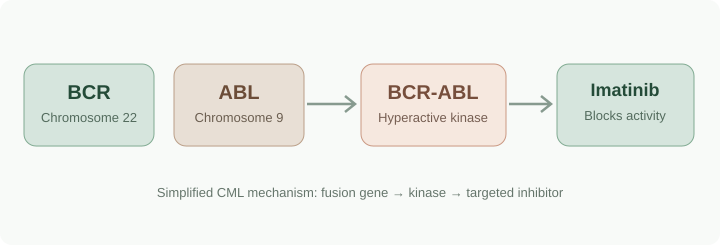

Returning to the blood cancer that began the story
After the HER2 breakthrough, Mukherjee takes us back to leukemia, the disease that first drew Sidney Farber into chemotherapy research.
This time, the leukemia is chronic myeloid leukemia (CML), a blood cancer that often progresses more slowly than acute leukemia but can eventually become life-threatening.
The return is intentional. Farber had shown that drugs could temporarily suppress a cancer without understanding every molecular mechanism. Decades later, scientists now had a chance to develop a drug against a precisely identified cancer-driving protein.
The question was no longer simply, Which chemical harms leukemia cells? It had become: Which abnormal molecular switch makes these leukemia cells grow, and can we turn that switch off?
The Philadelphia chromosome
In the 1960s, researchers identified an unusually small chromosome in cells from patients with CML. It became known as the Philadelphia chromosome.
Later, Janet Rowley demonstrated that the abnormality came from a rearrangement involving chromosomes 9 and 22. Pieces of the two chromosomes had exchanged places.
This kind of event is called a chromosomal translocation.
Usually, chromosomes carry genes arranged in particular locations. A translocation can join parts of genes that would normally remain separate, creating an abnormal new genetic instruction.
In CML, this rearrangement produces the fusion gene BCR-ABL.
A simple way to understand the fusion gene
Imagine two instruction manuals, one labeled BCR and the other ABL. An accident tears parts from each and joins them into one new manual.
The resulting instructions describe a protein that does not behave like either normally regulated component.
In CML, the BCR-ABL fusion protein acts as an abnormally active signaling enzyme. It continuously stimulates processes that encourage blood-forming cells to survive and multiply.
A small structural mistake in DNA can create a persistent growth signal.
This is why Rowley's work mattered so much. It connected a visible chromosomal abnormality with a molecular explanation for a cancer.
What is a kinase?
BCR-ABL is a tyrosine kinase. Kinases are proteins that transfer phosphate groups to other proteins, changing their activity.
A phosphate tag can serve as a molecular signal: a protein may become activated, inactivated, or altered in how it interacts with other proteins.
Imagine a series of switches in a building. One switch turns on a machine, that machine activates another, and soon an entire production line is operating.
In a normal cell, these signals are regulated. BCR-ABL behaves like a master switch stuck in the on position.
This is a simplified explanation, but it captures the therapeutic idea: if one kinase drives the leukemia, blocking that kinase might halt much of the disease's growth.

Proof that BCR-ABL actually drives leukemia
Finding an abnormal gene in cancer cells is not enough to prove it causes the disease. The gene might be a consequence of the cancer or an unrelated change.
Scientists therefore needed experiments connecting the mutation to malignant behavior.
In 1987, researchers working in David Baltimore's laboratory created mice whose blood-forming cells expressed the activated BCR-ABL gene. The animals developed leukemia resembling the human disease.
That result strengthened the argument that BCR-ABL was not merely a marker of CML. It could act as a driver of the malignant process.
The discovery created an unusually clear treatment target: a cancer strongly associated with a particular abnormal enzyme.
A drug hunt begins in Switzerland
Meanwhile, chemists at the pharmaceutical company Ciba-Geigy in Basel were searching for molecules that could inhibit particular kinases.
Alex Matter led the work, joined by Nick Lydon and other collaborators. Their challenge was to find a compound that would affect the target enzyme without indiscriminately blocking hundreds of other kinases essential to healthy cells.
Researchers knew of molecules such as staurosporine that could inhibit kinases, but they were not selective enough to make good medicines.
The task was to discover a chemically precise inhibitor.
Designing a molecular key
Kinases have three-dimensional surfaces with pockets where other molecules can bind. A small drug molecule can sometimes fit into one of these pockets and prevent the kinase from functioning.
The team developed and tested many chemical variants. Jürg Zimmermann modified candidate molecules; Elisabeth Buchdunger investigated their activity in biological experiments.
The process resembled the work of a locksmith:
- Design a key that might fit a molecular pocket.
- Test whether it blocks the desired kinase.
- Check whether it also blocks unwanted targets or harms cells.
- Modify the chemical structure and test again.
Years of repeated experiments eventually produced increasingly selective kinase inhibitors.
This was not a single lucky discovery. It was iterative drug development, moving between chemistry and biology until a useful property emerged.
Brian Druker sees the opportunity
Brian Druker, a young oncologist fascinated by CML, recognized that the Swiss researchers' kinase inhibitors might be matched to the BCR-ABL protein.
He had read Farber's early chemotherapy work and understood both its power and limitations. Farber had tried to target malignant cells without a complete mechanistic explanation. Druker now had a defined molecular target and potential inhibitors of the relevant enzyme.
He tried to collaborate with the company, but institutional and legal problems initially prevented the work from moving forward.
After relocating to Oregon Health and Science University in 1993, Druker renewed the collaboration.
This episode reveals another recurring obstacle: a scientifically promising experiment may fail to happen because the institutions involved cannot agree on how to conduct it.
The candidate called CGP57148
The research eventually focused on a compound originally called CGP57148. It was later called STI571, and its generic name became imatinib. Patients came to know it commercially as Gleevec.
In experimental systems, the medicine inhibited BCR-ABL kinase activity and suppressed the growth of CML cells.
It was a particularly important kind of result. Scientists had not simply found a chemical that happened to kill leukemia cells; they had found a drug designed to interfere with a molecular mechanism that could explain the disease's growth.
But one enormous hurdle remained: making enough medicine and testing it in humans.
Why the company was hesitant
CML affected a relatively small number of people each year. From a business perspective, developing a complex new medicine for a small patient population was risky.
There was also genuine scientific uncertainty. Success in laboratory cells and animals does not establish that a chemical can be taken safely by humans or that it will extend life.
Druker repeatedly pushed for human trials, sometimes encountering reluctance from the company.
He assembled collaborators, including Charles Sawyers, Moshe Talpaz, and John Goldman, who could help test the medicine in patients with CML.
In 1998, the company finally supplied enough drug to launch a clinical study.
The first patients receive Gleevec
The first participants were seriously ill patients, many with limited available treatment options.
One early patient was a retired railroad worker who volunteered after reading about Druker's work. The medical team watched carefully for dangerous reactions.
The drug did not produce the catastrophic toxicity they feared. As doses increased, clinicians began to see an extraordinary change: abnormal blood counts fell, and the blood increasingly resembled that of a healthy person.
In some patients, this happened within days or weeks.
One woman arrived with massively elevated blood counts and an enlarged spleen. After treatment, the counts dropped rapidly toward normal.
The ability to observe a cancer's response through repeated blood tests recalls exactly why Farber chose leukemia decades earlier.
The results were difficult to believe
In the initial phase I study described in the book, 53 of 54 patients who received higher doses experienced a complete blood-count response.
A response means the disease was controlled according to the measurements being made; it does not mean that every last malignant cell had been removed from the body.
Still, the results were stunning because advanced CML had previously carried a poor prognosis for many patients. Here was an oral medicine producing deep and sustained responses in a large majority of the treated group.
The contrast can be summarized:
| Earlier approach | New targeted approach |
|---|---|
| Treat leukemia with relatively broad cell-killing medicines | Inhibit the BCR-ABL kinase driving CML |
| Significant difficulty separating normal and malignant growth | Greater selectivity against an abnormal cancer dependency |
| CML could become rapidly fatal | Many patients could achieve long-lasting disease control |
| Limited molecular explanation for drug activity | Genetic cause and therapeutic target directly connected |
Gleevec was not entirely free of adverse effects, and its benefit was not identical in every patient. But it established a decisive principle.
A doctor encounters the new reality
Mukherjee describes seeing a patient with CML in 2002 who presented with an apparently minor rash.
He initially imagined a much more dangerous complication associated with bone marrow transplantation. But the patient had not undergone a transplant. He was taking Gleevec.
When Mukherjee examined the blood, the cells looked almost ordinary. The once-feared leukemia was scarcely visible in the routine sample.
For a doctor trained to recognize CML as a grave disease, the scene was quietly astonishing. The disease had not vanished from human biology, but its course had been transformed.
Why the title is 'A Four-Minute Mile'
In 1954, runner Roger Bannister became the first person to run a mile in under four minutes. The achievement mattered not because no one would ever run faster, but because it overturned a widely assumed limit.
Mukherjee compares the development of Gleevec to this event.
For years, many people doubted that a drug could target an oncogene with enough selectivity to produce powerful cancer responses without intolerable toxicity.
Gleevec demonstrated that the principle was possible. Future drugs could be developed against other genetically defined targets.
It did not prove that every cancer would be as vulnerable as CML. It proved that rational, molecularly targeted treatment could work.
Incidence and prevalence: A surprising consequence
The chapter ends with a statistical irony.
Incidence means the number of new cases appearing in a population over a period. Prevalence means the number of people living with a condition at a particular time.
Gleevec did not eliminate the new occurrence of CML. But by allowing many patients to live much longer, it increased the number of people alive with CML at any given time.
So a successful medicine can increase a disease's prevalence because it prevents patients from dying, not because it causes more new cases.
This is a valuable lesson in reading medical statistics: a rising number of people living with a disease does not automatically mean treatment is failing.
Important concepts to remember
| Term | Simple meaning |
|---|---|
| Philadelphia chromosome | Characteristic chromosome abnormality associated with CML |
| Translocation | Rearrangement in which pieces of chromosomes change positions |
| BCR-ABL | Fusion gene and abnormal kinase driving CML |
| Kinase inhibitor | Drug that interferes with certain protein-signaling enzymes |
| Imatinib / Gleevec | Drug developed to inhibit BCR-ABL and related kinases |
| Incidence | New cases during a period |
| Prevalence | Total living cases at a point or during a period |
Final chapter takeaway
The Gleevec story completes a circle that began with Farber. A blood cancer that once illustrated medicine's helplessness became a model for targeted therapy.
The revolutionary step was the chain of reasoning: a chromosome abnormality revealed a fusion gene; the gene produced an overactive kinase; chemists found a molecule to inhibit it; and clinical trials showed dramatic patient responses.
The next chapter reveals a further complication: even a cancer with one dominant molecular target can sometimes evolve a way around the treatment.